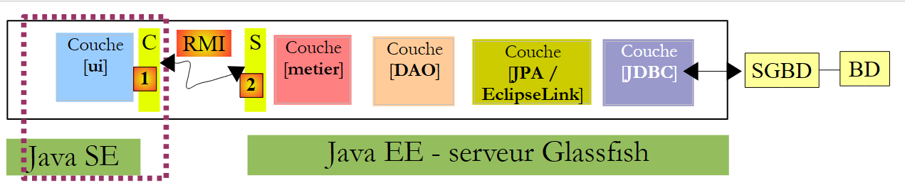
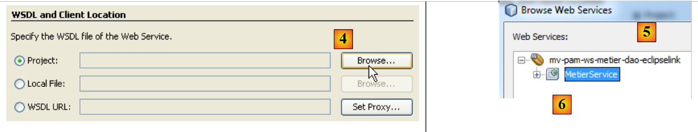
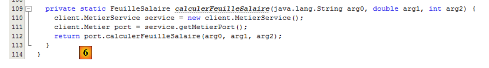
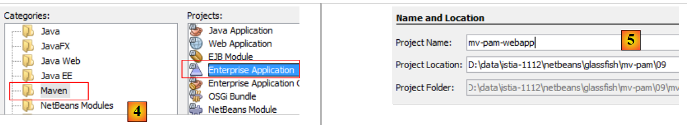
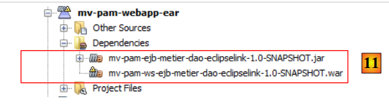
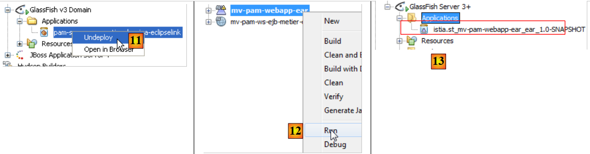
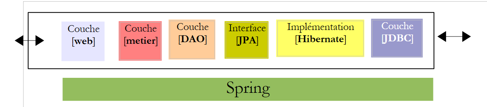
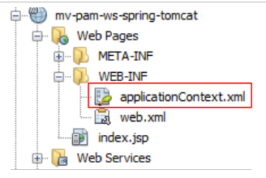

8. Version 4 – Client/Server in einer Webdienst-Architektur
In dieser neuen Version wird die Anwendung [Pam] im Client-Server-Modus in einer Webservice-Architektur ausgeführt. Werfen wir noch einmal einen Blick auf die Architektur der vorherigen Anwendung:
 |
Oben ermöglichte eine Kommunikationsschicht [C, RMI, S] eine transparente Kommunikation zwischen dem Client [ui] und der entfernten Schicht [metier]. Wir werden eine ähnliche Architektur verwenden, bei der die Kommunikationsschicht [C, RMI, S] durch eine Schicht [C, HTTP / SOAP, S] ersetzt wird:
 |
Das Protokoll HTTP / SOAP hat gegenüber dem vorherigen Protokoll RMI / EJB den Vorteil, dass es plattformübergreifend ist. So kann der Webdienst in Java geschrieben und auf dem Glassfish-Server bereitgestellt werden, während der Client beispielsweise ein .NET- oder PHP-Client sein könnte.
Wir werden diese Architektur in drei verschiedenen Modi entwickeln:
- Der Webdienst wird durch EJB und [Metier] bereitgestellt.
- Der Webdienst wird von einer Webanwendung bereitgestellt, die EJB und [Metier] verwendet
- Der Webdienst wird von einer Webanwendung bereitgestellt, die Spring verwendet
Ein Webdienst kann auf verschiedene Arten auf einem Java-Server EE implementiert werden:
- durch eine mit @WebService annotierte Klasse, die in einem Web-Container ausgeführt wird
 |
- durch ein mit @WebService annotiertes EJB, das in einem EJB-Container ausgeführt wird
 |
Wir beginnen mit dieser letzten Architektur.
8.1. Webdienst, implementiert durch ein EJB
8.1.1. Der Serverteil
8.1.1.1. Das NetBeans-Projekt
Beginnen wir damit, ein neues Maven-Projekt zu erstellen, das eine Kopie des Projekts EJB [mv-pam-ejb-metier-dao-jpa-eclipselink] ist:
 |
Mit folgender Architektur:
 |
Die Schicht [metier] ist der Webdienst, der von der Schicht [ui] aufgerufen wird. Diese Klasse muss keine Schnittstelle implementieren. Es sind Annotationen, die ein POJO (Plain Ordinary Java Object) in einen Webdienst umwandeln. Die Klasse [Metier], die die oben genannte Schicht [metier] implementiert, wird wie folgt umgewandelt:
package metier;
...
@WebService
@Stateless()
@TransactionAttribute(TransactionAttributeType.REQUIRED)
public class Metier implements IMetierLocal,IMetierRemote {
// Referenzen zu den Schichten [DAO]
@EJB
private ICotisationDaoLocal cotisationDao = null;
@EJB
private IEmployeDaoLocal employeDao=null;
@EJB
private IIndemniteDaoLocal indemniteDao=null;
// Lohnabrechnung abrufen
@WebMethod
public FeuilleSalaire calculerFeuilleSalaire(String SS,
...
}
// Mitarbeiterliste
@WebMethod
public List<Employe> findAllEmployes() {
...
}
// Wichtig – keine Getter und Setter für EJB
}
- In Zeile 4 macht die Annotation @WebService die Klasse [Metier] zu einem Webdienst. Ein Webdienst stellt seinen Clients Methoden zur Verfügung. Diese müssen mit dem Attribut @WebMethod annotiert werden.
- Zeilen 19 und 25: Die beiden Methoden der Klasse [Metier] werden zu Methoden des Webdienstes.
- Zeile 29: Es ist wichtig, dass die Getter und Setter entfernt werden, da sie sonst im Webdienst verfügbar gemacht werden und dies zu Sicherheitsfehlern führt.
Das Hinzufügen dieser Annotationen wird von NetBeans erkannt, woraufhin sich die Art des Projekts wie folgt ändert:
 |
In [1] ist im Projekt eine Baumstruktur [Web Services] erschienen. Darin befinden sich der Webdienst „Metier“ und seine beiden Methoden. Die Serveranwendung kann unter [2] bereitgestellt werden. Der Server MySQL muss gestartet sein, und seine Datenbank [dbpam_eclipselink] muss vorhanden und gefüllt sein. Möglicherweise müssen zuvor die Komponenten [3] und EJB aus dem zuvor untersuchten Client-/Server-Projekt EJB entfernt werden, um Namenskonflikte zu vermeiden. Tatsächlich enthält unser neues Projekt dieselben EJB wie das vorherige Projekt.
 |
In [1] sehen wir, wie unsere Anwendung serveur auf dem Glassfish-Server bereitgestellt wird. Sobald der Webdienst bereitgestellt ist, kann er getestet werden:
 |
- In [1], im aktuellen Projekt, testen wir den Webdienst [Metier]
- Der Webdienst ist über verschiedene URL erreichbar. Mit URL und [2] lässt sich der Webdienst
- in [3], einem Link auf die Datei XML, die den Webdienst definiert. Die Clients des Webdienstes müssen die URL dieser Datei kennen. Auf dieser Grundlage wird die Client-Schicht (Stubs) des Webdienstes generiert.
- in [4,5] ein Formular, mit dem die vom Webdienst bereitgestellten Methoden getestet werden können. Diese werden zusammen mit ihren Parametern angezeigt, die der Benutzer festlegen kann.
Testen wir beispielsweise die Methode [findAllEmployes], die keine Parameter benötigt:
 |
Oben testen wir die Methode. Daraufhin erhalten wir die untenstehende Antwort (Ausschnitt). Dort finden wir tatsächlich die beiden Mitarbeiter mit ihren Zulagen wieder. Der Leser ist eingeladen, die Methode [4] auf die gleiche Weise zu testen, indem er ihr die drei erwarteten Parameter übergibt.

8.1.2. Die Client-Seite
 |
8.1.2.1. Das NetBeans-Projekt des Clients „ -Konsole“
Wir erstellen nun ein Java-Projekt vom Typ [Java Application] für den Teil client der Anwendung. Es war (Stand: Juni 2012) nicht möglich, ein Maven-Projekt für diesen Client zu erstellen. Dabei tritt ein Fehler auf, der im Internet bekannt zu sein scheint, aber weiterhin ungelöst ist.
 |  |
Sobald das Projekt erstellt ist, legen wir fest, dass es als Client für den Webdienst fungieren soll, den wir gerade auf dem Glassfish-Server bereitgestellt haben:
 |
- In [2] wählen wir das neue Projekt aus und klicken auf die Schaltfläche [New File]
- In [3] geben wir an, dass wir einen Webdienst-Client erstellen möchten
 |
- Mit [4] legen wir das NetBeans-Projekt des Webdienstes fest
- Im Fenster „[5]“ werden alle Projekte mit einem Zweig „[Web Services]“ aufgelistet, hier nur das Projekt „[mv-pam-ws-metier-dao-eclipselink]“.
- Ein Projekt kann mehrere Webdienste bereitstellen. In [6] wählen wir den Webdienst aus, mit dem wir eine Verbindung herstellen möchten.
 |
- In [7] wird die URL zur Definition des Webdienstes angezeigt. Diese URL wird von den Software-Tools verwendet, die die Client-Schicht generieren, die mit dem Webdienst kommuniziert.
 |
- Die Client-Schicht [C] [1], die generiert wird, besteht aus einer Reihe von Java-Klassen, die in ein und demselben Paket abgelegt werden. Der Name dieses Pakets ist in [8] festgelegt.
- Sobald der Assistent zur Erstellung des Webservice-Clients mit der Schaltfläche [Finish] abgeschlossen ist, wird die oben genannte Schicht [C] erstellt.
Dies spiegelt sich in einer Reihe von Änderungen im Projekt wider:
- Im oben genannten [10] erscheint eine Baumstruktur [Generated Sources], die die Klassen der Schicht [C] enthält, die es dem Client [3] ermöglichen, mit dem Webdienst zu kommunizieren. Diese Schicht ermöglicht es dem Client [3], mit der Schicht [metier] und [4] so zu kommunizieren, als wäre sie lokal und nicht entfernt.
- In [11] erscheint eine Baumstruktur [Web Service References], die die Webdienste auflistet, für die eine Client-Schicht generiert wurde.
Es ist zu beachten, dass in der generierten Schicht [C] [10] Klassen zu finden sind, die serverseitig bereitgestellt wurden: Indemnite, Cotisation, Employe, FeuilleSalaire, ElementsSalaire, Metier. „Metier“ ist der Webdienst, und die anderen Klassen sind für diesen Dienst erforderliche Klassen. Vielleicht möchte man sich ihren Code einmal ansehen. Man wird feststellen, dass die Definition der Klassen, die instanziiert die vom Webservice bearbeiteten Objekte darstellen, aus der Definition der Klassenfelder und ihrer Accessoren sowie dem Hinzufügen von Annotationen besteht, die die Serialisierung der Klasse in den Datenstrom XML ermöglichen. Die Klasse „Metier“ ist zu einer Schnittstelle geworden, die die beiden mit @WebMethod annotierten Methoden enthält. Jede dieser Methoden führt zur Erstellung von zwei Klassen, zum Beispiel [CalculerFeuilleSalaire.java] und [CalculerFeuilleSalaireResponse.java], wobei die eine den Methodenaufruf und die andere dessen Ergebnis kapselt. Schließlich ist die Klasse MetierService die Klasse, die es dem Client ermöglicht, eine Referenz auf den entfernten Fach-Webdienst zu erhalten:
Die Methode getMetierPort in Zeile 2 ermöglicht es, eine Referenz auf den entfernten Metier-Webdienst zu erhalten.
8.1.2.2. Der Konsolen-Client des Fach-Webdienstes
Nun müssen wir nur noch den Client für den Fach-Webdienst schreiben. Wir kopieren die Klasse [MainRemote] aus dem Projekt [mv-pam-client-metier-dao-jpa-eclipselink], das ein Client eines Servers EJB war, in das neue Projekt.
 |
- in [1], die Klasse des Webservice-Clients. Die Klasse [MainRemote] weist Fehler auf. Um diese zu beheben, werden zunächst alle vorhandenen Anweisungen [import] in der Klasse gelöscht und anschließend mit der Option [Fix Imports] neu generiert. Tatsächlich gehören einige der von der Klasse [MainRemote] verwendeten Klassen nun zum generierten Paket [client].
- In [3] ist der Codeabschnitt, in dem die Schicht [metier] instanziiert wird, [3]. Dies geschieht mithilfe von Code aus JNDI, um eine Referenz auf ein entferntes EJB zu erhalten.
Wir passen den Code wie folgt an:
- Der Code JNDI wird entfernt
- Da die Klasse [PamException] auf der Client-Seite nicht existiert, entfernen wir das zugehörige catch, um nur das catch in der übergeordneten Klasse [Exception] beizubehalten.
 |
- In [4] müssen wir nun noch eine Referenz auf den Remote-Webdienst [Metier] abrufen, um dessen Methode [calculerFeuilleSalaire] aufrufen zu können.
- In [5] ziehen wir mit der Maus die Methode [calculerFeuilleSalaire] aus dem Webdienst [Metier] und legen sie in [4] ab. Es wird Code generiert: [6]. Dieser generische Code kann anschließend vom Entwickler angepasst werden.
 |
- In Zeile 112 sieht man, dass [calculerFeuilleSalaire] eine Methode der Klasse [client.Metier] (Zeile 111) ist. Da wir nun wissen, wie wir die Ebene [metier] erhalten, kann der vorherige Code wie folgt umgeschrieben werden:
In Zeile 7 wird eine Referenz auf den Webdienst „Metier“ abgerufen. Danach ändert sich der Code der Klasse nicht, außer dass in Zeile 10 nicht die Ausnahme vom Typ [Exception] behandelt wird, sondern der allgemeinere Typ Throwable, der übergeordneten Klasse der Klasse Exception. Im Falle einer Ausnahme zeigen wir alle verschachtelten Ursachen dieser Ausnahme bis hin zur ursprünglichen Ursache an.
Wir sind bereit für die Tests:
- Stellen Sie sicher, dass SGBD und MySQL5 gestartet sind, dass die Datenbank dbpam_eclipselink angelegt und initialisiert ist
- Stellen Sie sicher, dass der Webdienst auf dem Glassfish-Server bereitgestellt ist
- den Client erstellen (Clean and Build)
- die Ausführung des Clients konfigurieren
 |
- Führen Sie den Client aus
Die Ergebnisse in der Konsole lauten wie folgt:
Mit folgender Konfiguration:

erhält man folgende Ergebnisse:
Es ist zu beachten, dass der Webdienst [Metier] zwar eine Ausnahme vom Typ [PamException] sendet, die vom Client empfangene Ausnahme jedoch vom Typ [SOAPFaultException] ist. Selbst in der Ausnahmekette taucht der Typ [PamException] nicht auf.
8.1.3. Der Swing-Client des Webdienstes „Metier“
Aufgabe: Portieren Sie den Swing-Client des Projekts [mv-pam-client-ejb-metier-dao-jpa-eclipselink] in das neue Projekt, damit auch dieser als Client des auf dem Glassfish-Server bereitgestellten Webdienstes fungiert.
8.2. Durch eine Webanwendung implementierter Webdienst
Wir befinden uns nun im Rahmen der folgenden Architektur:
 |
Der Webdienst wird von einer Webanwendung bereitgestellt, die im Webcontainer des Glassfish-Servers ausgeführt wird. Dieser Webdienst stützt sich auf die Anwendung EJB, die wiederum im Container EJB3 bereitgestellt wird.
8.2.1. Der Serverteil
Wir erstellen eine Webanwendung:
 |
- in [1] erstellen wir ein neues Projekt
- in [2]; dieses Projekt ist vom Typ [Web Application]
- in [3], wir geben ihm den Namen [mv-pam-ws-ejb-metier-dao-eclipselink]
 |
- in [4] wählen wir die Java-Version EE 6
- aus [6], das erstellte Projekt
In der folgenden Abbildung wird die erstellte Webanwendung im Webcontainer ausgeführt. Sie nutzt die Komponenten EJB und [Metier], die wiederum im Container EJB des Servers bereitgestellt werden.
 |
Damit die erstellte Webanwendung Zugriff auf die mit dem EJB und [Metier] verbundenen Klassen hat, fügen wir den Bibliotheken der Webanwendung [mv-pam-ws-ejb-metier-dao-eclipselink] die Abhängigkeit von den bereits behandelten Serverklassen EJB und [mv-pam-ejb-metier-dao-eclipselink] hinzu.
 |
- In [1] fügen wir den Abhängigkeiten des Webprojekts ein Projekt hinzu,
- in [2] wird das Projekt [mv-pam-ejb-metier-dao-eclipselink] ausgewählt,
- in [3] ist der Typ der Abhängigkeit ejb,
- in [4] ist der Geltungsbereich der Abhängigkeit provided, d. h., sie wird von der Laufzeitumgebung bereitgestellt,
- in [5] wurde die Abhängigkeit hinzugefügt.
Um denselben Webdienst wie zuvor zu erstellen, müssen wir:
- eine Klasse mit dem Tag @Webservice erstellen
- mit zwei Methoden calculerFeuilleSalaire und findAllEmployes, die mit @WebMethod gekennzeichnet sind
Wir erstellen eine Klasse [PamWsEjbMetier] in einem Paket [pam.ws]:
 |
 |
Die Klasse [PamWsEjbMetier] sieht wie folgt aus:
- Zeilen 7–10: Die Klasse importiert Klassen aus den Modulen EJB und [pam-serveurws-metier-dao-jpa-eclipselink], deren Maven-Projekt zu den Abhängigkeiten des Projekts hinzugefügt wurde.
- Zeile 12: Die Klasse ist ein Webdienst
- Zeile 13: Sie implementiert die Schnittstelle IMetier, die im Modul EJB definiert ist
- Zeilen 18–19: Die Methode calculerFeuilleSalaire wird als Methode des Webdienstes bereitgestellt
- Zeilen 23–24: Die Methode findAllEmployes wird als Methode des Webdienstes bereitgestellt
- Zeilen 15–16: Die lokale Schnittstelle von EJB [Metier] wird in das Feld in Zeile 16 eingefügt. Wir verwenden die lokale Schnittstelle, da die Webanwendung und das Modul EJB im selben JVM ausgeführt werden.
- Zeilen 20 und 25: Die Methoden calculerFeuilleSalaire und findAllEmployes delegieren ihre Verarbeitung an die gleichnamigen Methoden des EJB [Metier]. Die Klasse dient daher lediglich dazu, die Methoden von EJB und [Metier] für Remote-Clients als Methoden eines Webdienstes bereitzustellen.
In NetBeans wird die Webanwendung als Anbieter eines Webdienstes erkannt:
 |
Um den Webdienst auf dem GlassFish-Server bereitzustellen, müssen wir sowohl
- das Webmodul im Webcontainer des Servers
- das Modul EJB im EJB-Container des Servers
Dazu müssen wir eine Anwendung vom Typ [Enterprise Application] erstellen, die beide Module gleichzeitig bereitstellt. Dazu müssen beide Projekte in NetBeans [2] geladen sein.
Anschließend erstellen wir ein neues Projekt mit dem Namen [3].
 |
- In [4] wählen wir den Projekttyp [Enterprise Application] aus.
- In [5] geben wir dem Projekt einen Namen
 |
- In [6] konfigurieren wir das Projekt. Die Java-Version von EE lautet Java EE 6. Ein Unternehmensprojekt kann mit zwei Modulen erstellt werden: einem EJB-Modul und einem Webmodul. Hier kapselt das Unternehmensprojekt das Web-Modul und das Modul EJB, die bereits erstellt und in NetBeans geladen wurden. Daher fordern wir keine Erstellung neuer Module an.
- In [7] befindet sich das so erstellte Unternehmensprojekt [mv-pam-webapp-ear]. Gleichzeitig wurde ein weiteres Maven-Projekt erstellt: [mv-pam-webapp]. Damit werden wir uns nicht befassen.
- In [8] fügen wir dem Unternehmensprojekt Abhängigkeiten hinzu
 |
- In [9] fügen wir das Web-Projekt vom Typ WAR hinzu,
- in [10] fügen wir das EJB-Projekt EJB hinzu,
 |
- in [11] das Unternehmensprojekt mit seinen beiden Abhängigkeiten.
Wir erstellen das Unternehmensprojekt mit einem „Clean and Build“. Wir sind fast bereit, es auf dem Glassfish-Server bereitzustellen. Zuvor kann es erforderlich sein, die bereits auf dem Server geladenen Anwendungen zu entladen, um mögliche Namenskonflikte zwischen EJB und [11] zu vermeiden:
 |
Der Server MySQL muss gestartet sein und die Datenbank [dbpam_eclipselink] muss verfügbar und gefüllt sein. Sobald dies erledigt ist, kann die Unternehmensanwendung [12] bereitgestellt werden. In [13] ist zu sehen, dass sie erfolgreich auf dem Glassfish-Server bereitgestellt wurde.
Wir können den soeben bereitgestellten Webdienst testen:
 |
- in [1], wir bitten darum, den Webdienst [PamWsEjbMetier]
- in [2], die Testseite. Wir überlassen es dem Leser, die Tests durchzuführen.
8.2.2. Der Client-Teil
Aufgabe: Erstellen Sie gemäß der in Abschnitt 8.1.2.1 beschriebenen Vorgehensweise einen Konsolen-Client für den oben genannten Webdienst.
8.3. Mit Spring und Tomcat implementierter Webdienst
Wir bewegen uns nun im Rahmen der folgenden Architektur:
 |
Der Webdienst wird von einer Webanwendung bereitgestellt, die im Webcontainer des Tomcat-Servers ausgeführt wird. Die Architektur der Anwendung sieht wie folgt aus:
 |
Wir stützen uns dabei auf das in Abschnitt 5.11 erstellte Projekt [mv-pam-spring-hibernate]:
 |
8.3.1. Der Serverteil
Wir erstellen eine Maven-Webanwendung mit dem Namen [mv-pam-ws-spring-tomcat] [1]:
 |
Wir bearbeiten die Datei [pom.xml], um die folgenden Abhängigkeiten [2] einzufügen:
<dependencies>
<dependency>
<groupId>${project.groupId}</groupId>
<artifactId>mv-pam-spring-hibernate</artifactId>
<version>${project.version}</version>
</dependency>
<!-- Abhängigkeiten von Apache CXF -->
<dependency>
<groupId>org.apache.cxf</groupId>
<artifactId>cxf-rt-frontend-jaxws</artifactId>
<version>2.2.12</version>
</dependency>
<dependency>
<groupId>org.apache.cxf</groupId>
<artifactId>cxf-rt-transports-http</artifactId>
<version>2.2.12</version>
</dependency>
</dependencies>
- Zeilen 3–7: die Abhängigkeit vom Projekt [spring-pam-jpa-hibernate],
- Zeilen 8–17: die Abhängigkeiten vom Apache-Framework CXF und [http://cxf.apache.org/]. Dieses erleichtert die Erstellung von Webdiensten.
Diese Datei [pom.xml] bringt zahlreiche Abhängigkeiten [2] mit sich.
Kommen wir zurück zur Architektur der Anwendung:
 |
Die Aufrufe des Webdienstes, den wir erstellen werden, werden von einem Servlet des Frameworks CXF verwaltet. Dies spiegelt sich in der Datei [WEB-INF / web.xml] wie folgt wider:
<?xml version="1.0" encoding="UTF-8"?>
<web-app version="2.5" xmlns="http://java.sun.com/xml/ns/javaee" xmlns:xsi="http://www.w3.org/2001/XMLSchema-instance" xsi:schemaLocation="http://java.sun.com/xml/ns/javaee http://java.sun.com/xml/ns/javaee/web-app_2_5.xsd">
<display-name>mv-pam-ws-spring-tomcat</display-name>
<listener>
<listener-class>org.springframework.web.context.ContextLoaderListener</listener-class>
</listener>
<!-- Konfiguration von CXF -->
<servlet>
<servlet-name>CXFServlet</servlet-name>
<servlet-class>org.apache.cxf.transport.servlet.CXFServlet</servlet-class>
<load-on-startup>1</load-on-startup>
</servlet>
<servlet-mapping>
<servlet-name>CXFServlet</servlet-name>
<url-pattern>/ws/*</url-pattern>
</servlet-mapping>
<session-config>
<session-timeout>
30
</session-timeout>
</session-config>
<welcome-file-list>
<welcome-file>index.jsp</welcome-file>
</welcome-file-list>
</web-app>
- Das Framework CXF ist von Spring abhängig. Zeilen 4–6: Es wird ein Listener deklariert. Die entsprechende Klasse wird gleichzeitig mit der Webanwendung geladen. Sie nutzt die Spring-Konfigurationsdatei [WEB-INF / applicationContext.xml]:
 |
- Zeilen 8–12: Das Servlet CXF, das die Aufrufe an den Webdienst verwalten wird, den wir erstellen werden,
- Zeilen 13–16: Die vom Servlet CXF verarbeiteten URL-Anfragen haben den Typ /ws/*. Die übrigen werden nicht vom Servlet CXF verarbeitet.
Um den Webdienst zu definieren, definieren wir eine Schnittstelle und deren Implementierung:
 |
Die Schnittstelle [IWsMetier] sieht wie folgt aus:
package pam.ws;
import javax.jws.WebService;
import metier.IMetier;
@WebService
public interface IWsMetier extends IMetier{
}
- Zeile 7: Die Schnittstelle [IWsMetier] leitet sich von der Schnittstelle [IMetier] der Schicht [métier] des Projekts [mv-pam-spring-hibernate] ab,
- Zeile 6: Die Schnittstelle [IWsMetier] ist die eines Webdienstes.
Die Implementierungsklasse dieser Schnittstelle lautet wie folgt:
package pam.ws;
import java.util.List;
import javax.jws.WebMethod;
import javax.jws.WebService;
import jpa.Employe;
import metier.FeuilleSalaire;
import metier.IMetier;
@WebService
public class PamWsMetier implements IWsMetier {
// Geschäftsschicht
private IMetier metier;
// Konstruktor
public PamWsMetier(){
}
@WebMethod
public FeuilleSalaire calculerFeuilleSalaire(String SS, double nbHeuresTravaillees, int nbJoursTravailles) {
return metier.calculerFeuilleSalaire(SS, nbHeuresTravaillees, nbJoursTravailles);
}
@WebMethod
public List<Employe> findAllEmployes() {
return metier.findAllEmployes();
}
// Getter und Setter
public void setMetier(IMetier metier) {
this.metier = metier;
}
}
- Zeile 11: Die Klasse [PamWsMetier] implementiert die zuvor definierte Schnittstelle,
- Zeile 10: Definiert die Klasse als Webdienst,
- Zeile 14: Die Schicht [métier] wird von Spring injiziert,
- Zeilen 21, 26: Die Annotation @WebMethod macht aus einer Methode eine vom Webservice bereitgestellte Methode,
- Zeilen 23, 28: Die Methoden werden mithilfe der Schicht [métier] implementiert.
Nun müssen wir noch den Inhalt der Spring-Konfigurationsdatei [applicationContext.xml] definieren:
 |
Ihr Inhalt lautet wie folgt:
<?xml version="1.0" encoding="UTF-8"?>
<beans xmlns="http://www.springframework.org/schema/beans" xmlns:xsi="http://www.w3.org/2001/XMLSchema-instance"
xmlns:tx="http://www.springframework.org/schema/tx"
xmlns:jaxws="http://cxf.apache.org/jaxws"
xsi:schemaLocation="http://www.springframework.org/schema/beans
http://www.springframework.org/schema/beans/spring-beans-2.0.xsd
http://www.springframework.org/schema/tx
http://www.springframework.org/schema/tx/spring-tx-2.0.xsd
http://cxf.apache.org/jaxws
http://cxf.apache.org/schemas/jaxws.xsd">
<!-- Apache CXF -->
<import resource="classpath:META-INF/cxf/cxf.xml" />
<import resource="classpath:META-INF/cxf/cxf-extension-soap.xml" />
<import resource="classpath:META-INF/cxf/cxf-servlet.xml" />
<!-- untere Schichten -->
<import resource="classpath:spring-config-metier-dao.xml" />
<!-- Webdienst -->
<bean id="wsMetier" class="pam.ws.PamWsMetier">
<property name="metier" ref="metier"/>
</bean>
<jaxws:endpoint id="wsmetier"
implementor="#wsMetier"
address="/metier">
</jaxws:endpoint>
</beans>
- Zeilen 13–15: Es werden Apache-Konfigurationsdateien CXF importiert. Diese werden im Classpath des Projekts gesucht (Attribut „classpath:“),
- Zeilen 4, 9, 10: Es werden Apache-spezifische Namespaces CXF deklariert,
- Zeile 18: Die Spring-Konfigurationsdatei des Projekts [mv-pam-spring-hibernate] wird importiert,
- Zeilen 21–23: Hier wird die Web-Service-Bean mit ihrer Abhängigkeit von der Schicht [métier] definiert (Zeile 22),
- Zeilen 24–27: Hier wird der Webservice selbst definiert,
- Zeile 25: Die Spring-Bean, die den Webservice implementiert, ist die in Zeile 21 definierte;
- Zeile 26: definiert die URL, unter der der Webservice verfügbar sein wird, hier /metier. In Kombination mit dem Format, das die von Apache CXF verarbeiteten URL haben müssen (siehe Datei web.xml), wird diese URL zu /ws/metier.
Unser Projekt ist bereit zur Ausführung. Wir führen es aus (Run) und rufen die URL [http://localhost:8080/mv-pam-ws-spring-tomcat/ws] in einem Browser auf:

Die Seite listet alle bereitgestellten Webservices auf. Hier gibt es nur einen. Wir folgen dem Link WSDL:
 |
Der angezeigte Text „[1]“ stammt aus einer Datei namens „XML“, die die Funktionen des Webdienstes, die Aufrufmethode und die zurückgegebenen Antworten definiert. Beachten Sie die URL und [2] dieser Datei WSDL. Alle Clients des Webdienstes müssen diese kennen.
8.3.2. Der Client-Teil
Aufgabe: Erstellen Sie gemäß der in Abschnitt 8.1.2.1 beschriebenen Vorgehensweise einen Konsolen-Client für den oben genannten Webdienst.
Hinweis: Um den URL der Datei WSDL des Webdienstes anzugeben, gehen Sie wie folgt vor:
 |
Man setzt in [3] den zuvor in [2] notierten Wert URL ein.